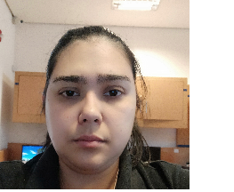

Curriculum Vitae
Datos personales

- Nombre completo: Silvia Karina Rodriguez León
- Fecha de nacimiento: 21/11/1990
- Lugar de nacimiento: Asunción
- Celular: 0961 408-264
- E-mail: karinarole94@fpuna.edu.py
Historial académico
- Institución: Universidad Nacional de Asunción - Facultad Politécnica
- Carrera: Lic. en Ciencias Informáticas
- Periodo: En curso
Experiencia laborales
- 2009-2010: Call center en Cidesa S.A.
- 2010-2011: Secretaria - Recepcionista en EMPO Ltda.
- 2011-2012: Profesora de informática - Instituto Unisoft System
- 2013-2021: Soporte y Programador en Sebaot Software S.R.L.
Hobbies/Pasatiempos
- Leer
- Ver series y/o peliculas
- Caminar
- Hacer ejercicio
- Pasar tiempo con amigos
Referencia